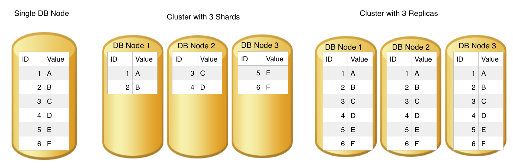
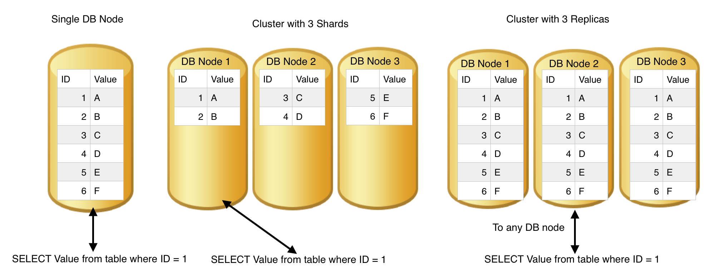
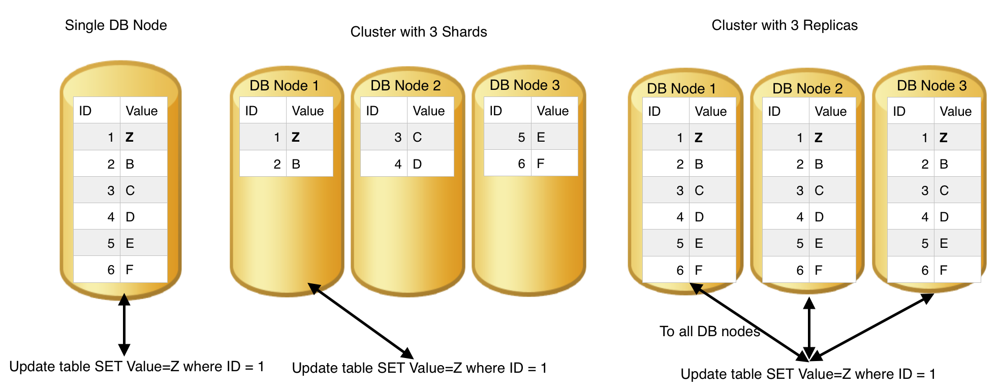
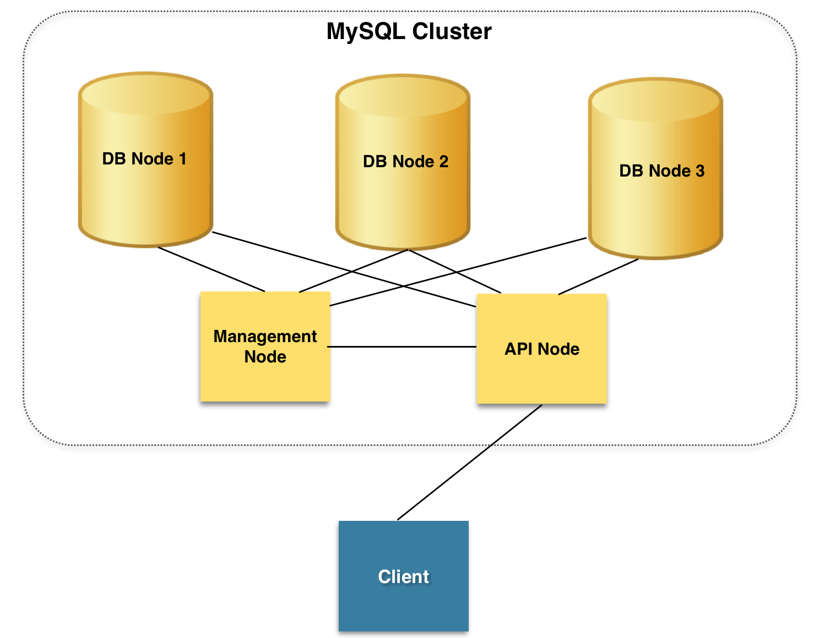
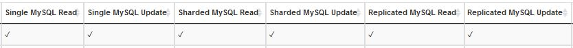
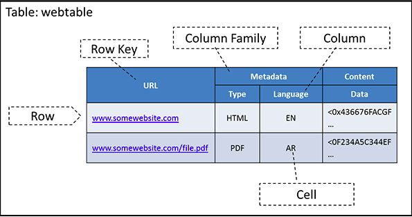
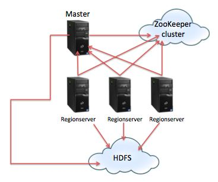

Introduction
Learning Objectives
This project will encompass the following learning objectives:
- Explore the advantages and disadvantages of using a single MySQL server
- Explore the advantages and disadvantages of using a replicated MySQL server
- Explore the advantages and disadvantages of using a sharded MySQL server
- Explore the advantages and disadvantages of using a NoSQL datastore (HBase)
Sharding and Replication
Replication and sharding are two techniques generally used to further improve the performance of the backend database system. The concept of sharding, or horizontal partitioning, is a database design principle whereby rows of a database table are held separately, rather than being split into columns. Each partition forms a shard, which may in turn be located on a separate database server or physical location. There are numerous advantages to this partitioning approach. As databases grow, it is time-consuming to search through whole tables. Thus, using sharding, tables are divided and distributed into multiple servers, the total number of rows in each table in each database instance is reduced. This reduces the index size, which generally improves search performance. A database shard can be placed on separate hardware, and multiple shards can be placed on multiple machines. This enables a distribution of the database over a large number of machines, which means that the database performance can be spread out over multiple machines, greatly improving performance for certain queries.
Another method to improve the performance of databases is replication, which simply replicates the database on many hosts so that a read query to the database can be satisfied by any one of the replicas of the database. In case of update queries, the request needs to propagate to all replicas in order to preserve consistency across replicas. Replication is particularly important when fault tolerance is of primary importance and also for performance when there exists a record in the database which is accessed very frequently by multiple clients.
The following figures show the difference between a single database node, cluster with 3 shards and cluster with 3 replicas.
Figure 1: The layout of a table on a single database node, cluster with 3 shards and cluster with 3 replicas.
Figure 2: Read query to a single database node, cluster with 3 shards and cluster with 3 replicas.
Figure 3: Update query to a single database node, cluster with 3 shards and cluster with 3 replicas.
MySQL Cluster
MySQL Cluster is an extension to MySQL that provides clustering and auto-sharding/replication for the MySQL database management system. It is designed to provide high availability and high throughput with low latency, while allowing for near linear scalability. MySQL Cluster is implemented through the NDB or NDBCLUSTER storage engine for MySQL (NDB stands for Network Database).
Types of Nodes in a MySQL Cluster
To create a fully functional production MySQL cluster, you need a minimum of 3 instances/nodes. The following are the types of nodes that should be part of a MySQL production cluster:
Cluster Management Node: The cluster management node manages the cluster. It does not hold any data. A cluster can have multiple management nodes for failover-redundancy and disaster recovery.
Data Node: The data nodes contain the actual data (i.e. the row-wise partitions of tables). These partitions are distributed across nodes. The cluster can be configured to maintain replicas too. If replication factor is 2, there are two copies of each partition distributed within the cluster.
API Node: These are the nodes that access the cluster data. In the case of a MySQL Cluster, an API node is a traditional MySQL server that uses the NDBCLUSTER storage engine. This is also called a SQL Node. API nodes allow for client access via the 3306 port by default.
In addition to the three types of nodes we can also have a LoadBalancer node or a MySQL proxy node. This node acts as a proxy end-point to an application that tries to access data through the available API Nodes in the cluster. The use of a proxy node is outside the scope of this project, but may come in handy for real-world MySQL deployments.
The following diagram illustrates a MySQL cluster that has 1 management node, 1 API Node and 3 Data Nodes.
Figure 4: MySQL cluster with one management node, one API node and three database nodes.
The Scenario
Since you excelled at your first job at Carnegie Records(CR), you got promoted to work on the backend storage systems of CR which delivers massive amount of music content to its half a billion customers worldwide. You are expected to make certain decisions for future planning for CR. Before that, you must familiarize yourself with the different backend storage systems that can be used at CR. In the following steps, you will perform certain experiments at the end of which you will be expected to make informed decisions. Make sure to pay special attention to the results and what they mean.
Resource Tagging
For this project, assign the tag with Key: Project and Value: 3.2 for all resources
Experiments
In this project we will first create a MySQL cluster configuration with one management node, one data node and one API node. After experimenting with one data node, we will extend the cluster to three data nodes. We will use m1.small instances for the management node and data nodes, and use m3.xlarge for MySQL API node. To achieve this, launch 2 m1.small instances (one management node and one data node) and one m3.xlarge instance (API node) (ami-84562dec) - all in the same availability zone. Note down the private IPs of all nodes. Please allow all traffic in the security group assigned to all nodes in the MySQL cluster.
| Instance Usage | Instance Type | AMI Id |
|---|---|---|
| Management node | m1.small | ami-84562dec |
| Database Node | m1.small | ami-84562dec |
| API Node | m3.xlarge | ami-84562dec |
Table 1: Instances, types and AMIs to be used
Note: Use the ubuntu user to log in to these instances. A lot of following commands require root access. It’s suggested to switch to root user by typing sudo su or add sudo at the beginning of commands.
Creating a MySQL Cluster with One Data Node
Configuring the management node
We will start by configuring the MySQL management node and then move on to the data node. You will want to execute the following commands as root unless mentioned otherwise:
Let's create a directory to hold all the source packages for the management node. Navigate to /usr/src directory and create the mysql-mgm directory:
mkdir /usr/src/mysql-mgm
Now let's download the latest GPL source packages for MySQL-Cluster from the MySQL download site and extract the archive:
wget http://cdn.mysql.com/Downloads/MySQL-Cluster-7.3/mysql-cluster-gpl-7.3.7-linux-glibc2.5-x86_64.tar.gz
tar xvfz mysql-cluster-gpl-7.3.7-linux-glibc2.5-x86_64.tar.gz
Navigate to the extracted folder and move the binaries to /usr/bin so that they appear on the user's PATH for execution:
cd mysql-cluster-gpl-7.3.7-linux-glibc2.5-x86_64
cp bin/ndb_mgm /usr/bin
cp bin/ndb_mgmd /usr/bin
Change the permissions for the MySQL binaries to allow for execute and optionally remove the downloaded source files from /usr/src
chmod 755 /usr/bin/ndb_mg*
cd /usr/src
rm -rf /usr/src/mysql-mgm
Next, we must create the cluster configuration file in /var/lib/mysql-cluster/ in a file named config.ini. The folder /var/lib/mysql-cluster/ does not exist so you need to create it.
mkdir /var/lib/mysql-cluster
Create the file config.ini file using your favourite text editor and add the following contents to the line:
[NDBD DEFAULT] # This parameter is very important. We will explain later NoOfReplicas=1 DataMemory=1024M IndexMemory=200M [MYSQLD DEFAULT] [NDB_MGMD DEFAULT] DataDir=/var/lib/mysql-cluster [TCP DEFAULT] # Section for the cluster management node [NDB_MGMD] NodeId=1 # IP address of the first management node (this system) HostName=<private ip of your MGMT node> # Section for the storage nodes [NDBD] # IP address of the data node(storage node) HostName=<private ip of your data node> DataDir= /var/lib/mysql-cluster [MYSQLD] # IP address of your API Node HostName=<private ip of your API node> [MYSQLD] # IP address of your API Node HostName=<private ip of your API node> [MYSQLD] # IP address of your API Node HostName=<private ip of your API node> [MYSQLD] # IP address of your API Node HostName=<private ip of your API node>
Note: The parameter NoOfReplicas controls the number of replications in the cluster. In the case with one data node and the parameter set to 1, the cluster behaves similar to a stand-alone mysql server. When we use 3 data nodes later in this project, this parameter decides whether to do sharding or replication. If it is set to 1, the data is partitioned into several shards and distributed across data nodes. If it is set to 3, each data node will store identical data (the whole dataset).
The number of [NDBD] sections is the same as the number of data nodes. At this stage we only have one [NDBD] section, representing the one data node. We have four [MYSQLD] sections with exactly the same content, although we are only using one API node. This is because we will configure API node to have multiple connections to the cluster, and each connection needs one slot.
Note that all hosts are defined at this stage, even though we are only installing the management node. Note that the management host node needs a NodeID parameter specified whereas the NDBD nodes do not.
Once this is done you can start the management node with the following command (this is a single line command):
ndb_mgmd -f /var/lib/mysql-cluster/config.ini --configdir=/var/lib/mysql-cluster/
Next, you can configure the ndb_mgmd to automatically start on boot by configuring it as an init.d script:
echo "ndb_mgmd -f /var/lib/mysql-cluster/config.ini --configdir=/var/lib/mysql-cluster/" > /etc/init.d/ndb_mgmd
chmod 755 /etc/init.d/ndb_mgmd
You can verify that the management node is operational using the command - ndb_mgm (just enter ndb_mgm in the terminal) and by typing "show" in the configuration utility. The command will work, but it will show that the ndbd node and API node are disconnected (because we have not configured them yet).
Configuring the Database Node
Creating the DB nodes is fairly similar to creating the management nodes.
Navigate to /usr/local and download the same package as the one we used for the management node and extract it.
cd /usr/local/
wget http://cdn.mysql.com/Downloads/MySQL-Cluster-7.3/mysql-cluster-gpl-7.3.7-linux-glibc2.5-x86_64.tar.gz
tar xvfz mysql-cluster-gpl-7.3.7-linux-glibc2.5-x86_64.tar.gz
Create a symbolic link named mysql pointing to the extracted folder (this will be used later by the DB cluster. So do not delete it!).
ln -s mysql-cluster-gpl-7.3.7-linux-glibc2.5-x86_64 mysql
Copy all the files in the bin directory to the /usr/bin location to keep everything neat and create a symlink to keep references right.
cd /usr/local/mysql/bin
mv * /usr/bin
cd ../
rm -fr /usr/local/mysql/bin
ln -s /usr/bin /usr/local/mysql/bin
The configuration file is not included by default. So we need to create it ourselves. The file should be in the /etc/ directory and should be named my.cnf. Open the file using a text editor and add the following lines to it:
[mysqld] ndbcluster # IP address of the cluster management node ndb-connectstring=<private IP of your Management Node> # Number of connections to cluster ndb-cluster-connection-pool=4 [mysql_cluster] # IP address of the cluster management node ndb-connectstring=
Finally create the data folder for the data node and launch the data node server. The initialization needs to be done only when you start the node for the first time, or when /var/lib/mysql-cluster/config.ini file has been changed on the management node(s)
mkdir /var/lib/mysql-cluster
cd /var/lib/mysql-cluster
ndbd –-initial
Finally, we need to configure ndb to start automatically using an init.d script:
echo "ndbd" > /etc/init.d/ndbd
chmod 755 /etc/init.d/ndbd
After launching the data node server, go to the management node and type ndb_mgm to launch the management client. In the console, type show to verify the data node is connected. (At this point, the API node still shows as disconnected, since we haven’t configured it yet)
Note: Please verify the data node (or all data nodes later in this project) are connected before you launch the mysql server in the API node.
Configuring the API Node
We start by creating a mysql group and adding a Linux user for MySQL. This is a good idea in general as you should not run mysql as root on a production system for security reasons.
groupadd mysql
useradd -g mysql mysql
Navigate to /usr/local and download the same package as the one we used for the management node and extract it.
cd /usr/local/
wget http://cdn.mysql.com/Downloads/MySQL-Cluster-7.3/mysql-cluster-gpl-7.3.7-linux-glibc2.5-x86_64.tar.gz
tar xvfz mysql-cluster-gpl-7.3.7-linux-glibc2.5-x86_64.tar.gz
Create a symbolic link named mysql pointing to the extracted folder (this will be used later by the DB cluster. So do not delete it!). Once the symlink is complete you can install the database.
ln -s mysql-cluster-gpl-7.3.7-linux-glibc2.5-x86_64 mysql
cd mysql
apt-get install libaio1 libaio-dev
Install the mysql database by running the script.
scripts/mysql_install_db --user=mysql --datadir=/usr/local/mysql/data
Change the ownership of the directory to the newly created mysql group.
chown -R root:mysql .
chown -R mysql data
As with the management nodes, we want the database engine to start automatically and thus we need to add the appropriate init.d script.
cp support-files/mysql.server /etc/init.d/
chmod 755 /etc/init.d/mysql.server
Finally, copy all the files in the bin directory to the /usr/bin location to keep everything neat and create a symlink to keep references right as shown below.
cd /usr/local/mysql/bin
mv * /usr/bin
cd ../
rm -fr /usr/local/mysql/bin
ln -s /usr/bin /usr/local/mysql/bin
The MySQL configuration file is not included by default. So we need to create it ourselves. The file should be in the /etc/ directory and should be named my.cnf. Open the file using a text editor and add the following lines to it:
[mysqld] ndbcluster # IP address of the cluster management node ndb-connectstring=<private IP of your Management Node> # Number of connections to cluster ndb-cluster-connection-pool=4 [mysql_cluster] # IP address of the cluster management node ndb-connectstring=<private IP of your Management Node>
Once the my.cnf file has been saved we need to create the data folders for MySQL.
mkdir /var/lib/mysql-cluster
Once that is done, we just need to start the service.
/etc/init.d/mysql.server start
After this, secure the MySQL installation by running the appropriate script.
/usr/local/mysql/bin/mysql_secure_installation
When asked to assign a new password for the root user, you can choose to not assign a password. If you created a new password for the root user, you will need it for the later step to create a new user. When asked whether to delete test database, please choose yes.
Once everything is completed it is time to verify our configuration to check if everything is working as configured. In the terminal of the management node, open the ndb management shell by typing ndb_mgm in the terminal and type show. This time you should see that both the data node and API node are connected like this:
Cluster Configuration --------------------- [ndbd(NDB)] 1 node(s) id=2 @IP (mysql-5.6.21 ndb-7.3.7, Nodegroup: 0, *) [ndb_mgmd(MGM)] 1 node(s) id=1 @IP (mysql-5.6.21 ndb-7.3.7) [mysqld(API)] 4 node(s) id=3 @IP (mysql-5.6.21 ndb-7.3.7) id=4 @IP (mysql-5.6.21 ndb-7.3.7) id=5 @IP (mysql-5.6.21 ndb-7.3.7) id=6 @IP (mysql-5.6.21 ndb-7.3.7)
Creating a user for your MySQL Cluster
Log into the API node SQL shell by typing
mysql -u root -por if you have set a password for root user, type
mysql -u root -pYOURPASSWORD
Once logged into the API node SQL shell, execute the following command:
CREATE USER 'user'@'localhost' IDENTIFIED BY 'password';
GRANT ALL PRIVILEGES ON *.* TO 'user'@'localhost' with grant option;
CREATE USER 'user'@'%' IDENTIFIED BY 'password';
GRANT ALL PRIVILEGES ON *.* TO 'user'@'%' with grant option;
FLUSH PRIVILEGES;
Change the user and password as per your configuration needs. The % in the IP-address acts as a wildcard and thus the whole subnet is allowed to connect remotely to this API node. Remember to flush privileges after the user has been added. This username and password will be used to connect to the API Node from outside the cluster.
Project AMI
For this part, the AMI ID is ami-84562dec (MySQL) and ami-16f4ab7e (YCSB), and the instance type is m3.xlarge (YCSB). For the MySQL instances check the next section.
Task to Complete:
1. You will be using the Yahoo Cloud System Benchmark (YCSB) to run the benchmark experiments on the MySQL configurations. To start, obtain a m3.xlarge machine (Remember to use spot instances as m3.xlarge instances are very expensive) and boot it using the YCSB AMI (ami-16f4ab7e). Since this AMI is based on Amazon Linux, you can log in using the username ec2-user. This will be the client machine from which you run all your experiments (Measuring Read and Update benchmarks for various configurations of the MySQL cluster). Make sure the security group assigned to this machine is configured to allow all TCP, UDP, and ICMP traffic.
2. Create a records.props file in the YCSB root directory, if it does not exist already. This file will tell YCSB how many database records to create and the offset at which to start creating records. Note that the offset only matters if we were using multiple YCSB clients and wanted each one to independently generate database entries. Make sure the file contains the following three lines:
recordcount=50000YCSB runs the benchmark tests by accessing the MySQL database using the JDBC database driver. For MySQL this is called MySQL Connector/J. In the YCSB AMI provided to you, there is already a connector jar file, which YCSB uses.
insertstart=0
threadcount=100
3. Edit the db.properties file under the configuration folder of jdbc-binding. In this file, you should see several properties. For MySQL the Driver Class should be com.mysql.jdbc.Driver. The JDBC URL is of the form:
jdbc:mysql://server/databaseName(Here the server should be the public DNS of the API node in your MySQL Cluster and the databaseName is test). Finally you should set the MySQL database’s user name and password according to your settings on the MySQL Cluster. These configurations are essential for YCSB to connect to the MySQL setup and run the benchmark tests.
4. SSH to the API node, run the following SQL command to create a table in the MySQL Cluster.
CREATE DATABASE test;
USE test;
CREATE TABLE usertable(YCSB_KEY VARCHAR (255) PRIMARY KEY, FIELD0 CHAR(1), FIELD1 CHAR(1), FIELD2 CHAR(1), FIELD3 CHAR(1), FIELD4 CHAR(1), FIELD5 CHAR(1), FIELD6 CHAR(1), FIELD7 CHAR(1), FIELD8 CHAR(1), FIELD9 CHAR(1)) ENGINE=NDBCLUSTER;
5. On the YCSB client, we can now load the MySQL cluster with the data required for the benchmark. Go to the YCSB root directory (~/ycsb-0.1.4) and run the following command:
./ycsb load jdbc -threads 5 -P workloads/workloada -P jdbc-binding/conf/db.properties -P records.props -s 1> summary_file_loaddata 2> results_file_loaddata
6. The usage of YCSB command for running the benchmark tests is given below. Please ensure that the correct trace_type and configuration_type are specified before running, as these are used for auto-grading your run on TPZ.
Usage: time bin/ycsb run trace_type configuration_type [options]
Valid values for trace_type: read, update
Valid values for configuration_type: single, sharding, replication, hbase
7. Now, we are going to run the benchmark with different workloads. Under the workloads folder, there are several files describing different workloads. For example, in workloada, only read requests will be sent while in workloadb, only update requests will be sent. For these workloads, the distribution of requests is uniform. Use the following commands to run the benchmark:
time ./ycsb run read single jdbc -P workloads/workloada -P jdbc-binding/conf/db.properties -P records.props -p operationcount=1000000 -s -threads 100 summary_file_testId results_file_testIdwhere test id can be any string of your choice to identify the result file. The standard output will be redirected to file summary_file_testId, which contains the throughput(options per second) in a line like:
time ./ycsb run update single jdbc -P workloads/workloadb -P jdbc-binding/conf/db.properties -P records.props -p operationcount=1000000 -s -threads 100 summary_file_testId results_file_testId
[OVERALL], Throughput(ops/sec),The standard error will be redirected to file results_file_testId where you can find error messages if there are any or the throughput with every 10-second time interval. Repeat the tests several times to get an accurate measure. If your run is accepted, you will see a tick mark for the corresponding run in TPZ submissions table at the end of the run (Wait for 60 seconds after each run for TPZ to show the results).
8. Please note down the overall throughput in the summary files for both read and write workloads. The throughput will be needed for analysis in the quiz questions (aka for making future decisions for CR)
9. If you configured your MySQL cluster and ran the YCSB benchmark correctly, you should get points in the submissions on TPZ. Proceed to the quiz only after you get a tick against all the tasks on TPZ (i.e, after completing all the experiments and noting down results)
Extending the Cluster to Three Data Node Sharding
Now that you are familiar with the infrastructure of MySQL cluster, you are going to extend the cluster by adding two additional data nodes. Note: Please do not terminate the previous running instances, otherwise you will need to configure them again.
Launch two more m1.small instances with the same ami and security group as the data node in the first step. Install and configure the newly launched data nodes by following the steps in section Configuring Database Node, but skip the last step (ndbd –-initial). Go to the management node and change the file /var/lib/mysql-cluster/config.ini to add two more [NDBD] sections corresponding to the two newly launched data nodes.
Now we have configured the cluster to have one management node, one API node and three data nodes. We need to restart the system for the new configuration to take effect. The restart of the system is tricky and error-prone. Please follow the following steps carefully.
To restart the system, go to the management node and open the management console by typing ndb_mgm. In the interactive shell, type shutdown to close the management server and data node servers. After this is down, type quit to quit the management console.
Next we need to manually shutdown the mysql server in the API node. SSH to the API node and type ps aux | grep -i mysqld. This command will show all processes that have “mysqld” as their name or parameter. The second column is the process id that we will use to terminate the processes. The first two lines should be the mysql server that we want to terminate.(Ignore the the line saying “grep --color=auto -i mysqld” because this is the process for searching mysqld processes). To kill the two mysql servers, type kill -9 <process id>.
Now that all processes on all nodes related to the MySQL cluster have been terminated, we then start these processes to complete a restart.
In order to add the database node details for sharding, first SSH to the management node to remove the database node data and launch the management server:
rm -rf /var/lib/mysql-cluster/ndb*
ndb_mgmd -f /var/lib/mysql-cluster/config.ini --configdir=/var/lib/mysql-cluster/
SSH to each data node to remove the database data and launch the database server:
cd /var/lib/mysql-cluster
rm -rf /var/lib/mysql-cluster/ndb*
ndbd –-initial
Next, we want to make sure all data nodes are connected to the management node before starting the API node server. In the management node, type ndb_mgm to enter the management console and enter show to view node status. You should see that all data nodes are connected.
Finally, ssh to the API node and type:
/etc/init.d/mysql.server startNote that since we didn’t change the NoOfReplicas parameter in the /var/lib/mysql-cluster/config.ini file, there is only one copy of the data. This means the current configuration is sharding with three data nodes.
You can verify all nodes are connected using ndb_mgm console in management node. You should see something like:
Cluster Configuration --------------------- [ndbd(NDB)] 3 node(s) id=2 @private ip of db1 (mysql-5.6.21 ndb-7.3.7, Nodegroup: 0, *) id=3 @private ip of db2 (mysql-5.6.21 ndb-7.3.7, Nodegroup: 1) id=4 @private ip of db3 (mysql-5.6.21 ndb-7.3.7, Nodegroup: 2) [ndb_mgmd(MGM)] 1 node(s) id=1 @private ip of mgm node (mysql-5.6.21 ndb-7.3.7) [mysqld(API)] 4 node(s) id=5 @private ip of api node (mysql-5.6.21 ndb-7.3.7) id=6 @private ip of api node (mysql-5.6.21 ndb-7.3.7) id=7 @private ip of api node (mysql-5.6.21 ndb-7.3.7) id=8 @private ip of api node (mysql-5.6.21 ndb-7.3.7)
The three data nodes have different node groups, meaning that they store different shards of the data.
After making sure all nodes are connected, you have completed restarting the cluster and can do experiments with the YCSB benchmark.
Task to Complete:
1. Since we deleted the table data when we reconfigured and restarted the MySQL cluster, we need to create the table again in the API node. In the API node, open the mysql client console:
mysql -u USERNAME -pYOURPASSWORDReplace USERNAME and YOURPASSWORD accordingly.
2. Switch to the database test and create the table usertable as we did in previous task:
USE test;
CREATE TABLE usertable(YCSB_KEY VARCHAR (255) PRIMARY KEY, FIELD0 CHAR(1), FIELD1 CHAR(1), FIELD2 CHAR(1), FIELD3 CHAR(1), FIELD4 CHAR(1), FIELD5 CHAR(1), FIELD6 CHAR(1), FIELD7 CHAR(1), FIELD8 CHAR(1), FIELD9 CHAR(1)) ENGINE=NDBCLUSTER;
3. Now that the table is created, go back to the YCSB instance and repeat the load and run tests as we did in the previous task, but change the parameter single to sharding.
./ycsb load jdbc -threads 5 -P workloads/workloada -P jdbc-binding/conf/db.properties -P records.props -s 1> summary_file_loaddata 2> results_file_loaddata time ./ycsb run read sharding jdbc -P workloads/workloada -P jdbc-binding/conf/db.properties -P records.props -p operationcount=1000000 -s -threads 100 summary_file_testId results_file_testId time ./ycsb run update sharding jdbc -P workloads/workloadb -P jdbc-binding/conf/db.properties -P records.props -p operationcount=1000000 -s -threads 100 summary_file_testId results_file_testId
4. If you configured your MySQL cluster and ran the YCSB benchmark correctly, you should get points in the submissions on TPZ. Proceed to the next steps only if you get points on TPZ.
Switching from Sharding to Replication
At this point, you have played with the MySQL cluster with one data node and cluster with three data nodes configured as shards of a table. Next we are going to change the configuration to replication. After this step is done, there will be three identical copies of the data, each stored on one of the three data nodes.
First, go to the management node and edit the configuration file /var/lib/mysql-cluster/config.ini. Change the line NoOfReplicas=1 to NoOfReplicas=3
Next, restart the cluster by following the instructions in the previous section.
Finally, verify that all nodes are connected using ndb_mgm console in the management node. You should see output like:
Cluster Configuration --------------------- [ndbd(NDB)] 3 node(s) id=2 @private ip of db1 (mysql-5.6.21 ndb-7.3.7, Nodegroup: 0, *) id=3 @private ip of db2 (mysql-5.6.21 ndb-7.3.7, Nodegroup: 0) id=4 @private ip of db3 (mysql-5.6.21 ndb-7.3.7, Nodegroup: 0) [ndb_mgmd(MGM)] 1 node(s) id=1 @private ip of mgm node (mysql-5.6.21 ndb-7.3.7) [mysqld(API)] 4 node(s) id=5 @private ip of api node (mysql-5.6.21 ndb-7.3.7) id=6 @private ip of api node (mysql-5.6.21 ndb-7.3.7) id=7 @private ip of api node (mysql-5.6.21 ndb-7.3.7) id=8 @private ip of api node (mysql-5.6.21 ndb-7.3.7)All data nodes are in Nodegroup 0, meaning that they store identical copies of the data.
Task to Complete:
1. After restarting the MySQL cluster, you need to create the table usertable again from the API node similar to how you did it in the previous task
2. Similar to the step in the previous task, go to the YCSB instance and repeat the load and run tests, but change the parameter single to replication
./ycsb load jdbc -threads 5 -P workloads/workloada -P jdbc-binding/conf/db.properties -P records.props -s 1> summary_file_loaddata 2> results_file_loaddata time ./ycsb run read replication jdbc -P workloads/workloada -P jdbc-binding/conf/db.properties -P records.props -p operationcount=1000000 -s -threads 100 summary_file_testId results_file_testId time ./ycsb run update replication jdbc -P workloads/workloadb -P jdbc-binding/conf/db.properties -P records.props -p operationcount=1000000 -s -threads 100 summary_file_testId results_file_testId
3. Please note down the overall throughputs in the summary files for both the read and write workloads. The throughputs will be needed for analysis in order to answer the quiz questions.
4. If you configured your MySQL cluster and ran the YCSB benchmark correctly, you should get points in the submissions on TPZ. At this stage, you should have got all scores for the MySQL experiments in TPZ as shown in the following picture:
HBase Benchmarks
Apache HBase is an open-source version of Google's BigTable distributed storage system and is supported by the Apache Software Foundation. BigTable is a distributed, scalable, high-performance, versioned database. BigTable 's infrastructure is designed to store billions of rows and columns of data in loosely defined tables. Just as traditional RDBMSs are designed to run on top of a local file system, HBase is designed to work on top of the Hadoop Distributed File System (HDFS). HDFS is a distributed file system that stores files as replicated blocks across multiple servers. HDFS lends a scalable and reliable file system back end to HBase.
So, In an HBase table, data are organized as rows and columns as shown in the following figure:

Figure 5: HBase Table
A row in HBase is referenced using a row key which is raw byte array, which can be considered to be the primary key of the table in an RDBMS. The primary key of the table has to be unique and hence reference one and only one row. HBase automatically sorts table rows by row key when it stores them. By default, this sort is byte ordered.
As shown in the above figure, each key consists of the following parts: rowkey, column_family, column and timestamp. Thus the mapping becomes: (rowkey, column family, column, timestamp) -> value. Rowkey and value are simply bytes, so anything that could be serialized into bytes can be stored into a cell. These cells in HBase are sorted lexicographically by rowkey which is a very important property as it allows for quick searching.
Columns in HBase have a column name, which can be used to refer to a column. Columns can be further grouped into column families. All column family members have a common prefix, so, in the above figure, the columns Metadata:Type and Metadata:Language are both members of the Metadata column family, whereas Content:Data belongs to the Content family. By default, the colon character (:) delimits the column prefix from the family member. The column family prefix must be composed of printable characters. The qualifying tail can be made of any arbitrary bytes.
HBase Operations
HBase has four primary operations on the data model: Get, Put, Scan, and Delete.
A Get operation returns all of the cells for a specified row, which are pointed to by a row key. A Put operation can either add new rows to the table when used with a new key or update a row if the key already exists. Scan is an operation that iterates over multiple rows based on some condition, such as a row key value or a column attribute. A Delete operation removes a row from a table. Get and Scan operations always return data in sorted order. Data are first sorted by row key, then by column family, then by family members, and finally by timestamp (so the latest values appear first).
By default, Get, Scan, and Delete operations on an HBase table are performed on data that have the latest version. A Put operation always creates a new version of the data that are put into HBase. By default, Delete operations delete an entire row but can also be used to delete specific versions of data in a row. Each operation can be targeted to an explicit version number as well.
HBase Architecture
HBase is organized as a cluster of HBase nodes. These nodes are of two types: a master node and one or more slave nodes called RegionServers.
Figure 6: HBase architecture
HBase uses Apache ZooKeeper as a distribution coordination service for the entire HBase cluster. For example, it handles master selection (choosing one of the nodes to be the master node), the lookup for the -ROOT- catalog table (explained shortly), and node registration (when new regionservers are added). The master node that is chosen by ZooKeeper handles such functions as region allocation, failover, and load balancing.
HBase is designed to use HDFS in the back end but also supports various kinds of file systems, including a local file system and even Amazon S3.
Video: HBase Demo
Task to Complete:
1. You will use the YCSB instance that you already have running to test the performance of HBase for the following scenario:
| Scenario | Number of Core Instances | Instance Type |
|---|---|---|
| 1 | 4 | m1.large |
2. We will be using Amazon's Elastic MapReduce (EMR) to provision an HBase cluster for us to use. HBase uses the Hadoop Distributed File System (HDFS) in order to store data. HDFS is a file system that is distributed over the individual core nodes in an EMR cluster. By default, Amazon configures HDFS in an EMR cluster to use the built-in (instance) storage volumes that come by default in each core EC2 instance. The subsequent steps will illustrate how you can run an EMR cluster to work with HBase.
3. Launch an EMR cluster with 1 master and 4 core nodes
- Make sure all instances are m1.large
- Choose AMI version 2.4.2 (Hadoop version 1.0.3)
- Remove any existing services such as Pig and Hive and choose to install HBase version 0.92
- You must specify a key-pair to be able to SSH to the individual instances. Note that the username to use while SSHing to these instances is hadoop
- Do not forget to set a tag that will be automatically propagated to the individual instances in the cluster.
- Enable "termination protection" and "keep-alive" for your cluster
4. Modify the security group of the core instances and allow port 22 so that you can SSH to the instances.
You should also modify the security groups of the master and core instances to allow all traffic, especially from your YCSB client node.
you can run the following command to verify that HDFS is healthy being reported per datanode:
hadoop dfsadmin -report
5. SSH to the HBase master node and run the following command:
hbase org.apache.hadoop.hbase.util.RegionSplitter usertable -c 200 -f family
-c Allows us to create a new Table with a pre-split number of regions
-f Specifies the column families to create in the table
6. SSH to the YCSB client launched and configured earlier and create a records.props file in the YCSB root directory, if it does not exist already. This file will tell YCSB how many database records to create and the offset at which to start creating records. Note that the offset only matters if we were using multiple YCSB clients and wanted each one to independently generate database entries. Make sure the file contains the following two lines:
recordcount=1000000 insertstart=0
Then, go to the ycsb-0.1.4 directory.
7. Edit the ycsb0.1.4/hbase-binding/conf/hbase-site.xml to specify the relevant fields of MASTER, ROOTDIR and ZOOKEEPER. They must all be set to the address of the EMR/HBase master node.
8. We can now load the HBase cluster with the data required for the benchmark. Run the following command:
time ./ycsb load hbase -p columnfamily=family -P workloads/workloada -P records.props -threads 50 -s 1> username_hbase_summary_file_loaddata 2> username_hbase_results_file_loaddata
Enter your andrewID in the username fields above.
9. An important parameter in YCSB is the request arrival rate. This parameter can be used to specify the how often requests are sent to the database during the benchmark. We will be testing the target arrival rates of 800. Use the following command to run the benchmark from the ycsb-0.1.4 folder :
time ./ycsb run read hbase -p columnfamily=family -P workloads/workloada -p operationcount=200000 -P records.props -threads 50 -s -target 800 username_hbase_summary_file username_hbase_results_file
10. You can run the test for each target arrival rate three times and record the average throughput for later work. Make sure you run the tests consecutively without a long delay in betweeen. The throughput and other statistics are in the summary file.
11. Terminate all your instances once you are done.
Grading
To complete the project, you are expected to answer some questions provided in the YCSB AMI. Please complete all experiments with YCSB before answering quiz questions. The quiz questions are present in the file /home/ec2-user/Project3_2/runner.sh. You can verify and submit your results using the given auto-grader in the AMI. The quiz questions are designed to test your role as a backend architect at Carnegie Records. To use the autograder, do the following:
-
Go to the auto-grader folder located at
/home/ec2-user/Project3_2 -
The auto-grader consists of three files,
runner.sh,submitterandreferences. You have permissions to editrunner.shandreferencesfiles. -
Edit the script
runner.shto include the answers to the quiz questions. -
Edit the text file
referencesto include all the links that you referred to for completing this project. Also include the Andrew IDs of all the other students who you might have discussed general ideas with when working on this project in the same file. -
You can run the autograder by typing
./runner.shfrom the autograder folder. Running this script should print out the answers to all the questions. Please ensure that the answers are printing correctly before using submitter. -
Once you have completed all the questions, you can submit the answers to the evaluation system using the auto-grader executable
submitter. Run the executable using the command./submitterfrom the autograder folder. After running this command, you should be able to see your scores on the website in a few minutes. You are limited to 3 submissions. So decide carefully before submitting the results. Each submission must be at least 60 seconds apart.
Project Grading Penalties
Besides the penalties mentioned in recitation and/or on Piazza, penalties accrue for the following:
| Violation | Penalty of the project grade |
|---|---|
| Spending more than $15 for this project checkpoint | -10% |
| Spending more than $30 for this project checkpoint | -100% |
| Failing to tag all your resources for this project | -10% |
| Using any instance other than the ones specified in the writeup | -10% |
| Attempting to hack/tamper the auto-grader | -100% |